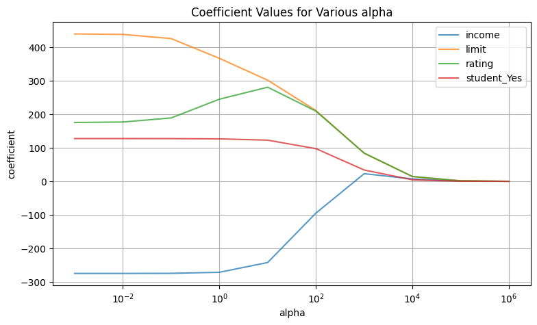
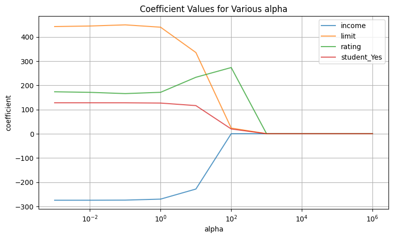

import pandas as pd
import numpy as np
%matplotlib inline23 Ridge and Lasso Regression
In this chapter we explore two variants of linear regression: ridge and lasso. Both of these are shrinkage methods, meaning that they shrink regression coefficients to zero. This has the effect of trading a little bit of bias for a reduction in variance. This can improve model stability and fit.
This tutorial is based on section 6.2 of Introduction to Statistical Learning 2e.
23.1 Import Packages
Let’s begin by importing the packages that we will need.
23.2 Read-In Data
Next, we’ll read-in the data that we will be working with; it is the Credit data set from the ISLR2 R package that can be downloaded from CRAN.
df_credit = pd.read_csv('credit.csv')
df_credit.columns = df_credit.columns.str.lower()
df_credit| income | limit | rating | cards | age | education | own | student | married | region | balance | |
|---|---|---|---|---|---|---|---|---|---|---|---|
| 0 | 14.891 | 3606 | 283 | 2 | 34 | 11 | No | No | Yes | South | 333 |
| 1 | 106.025 | 6645 | 483 | 3 | 82 | 15 | Yes | Yes | Yes | West | 903 |
| 2 | 104.593 | 7075 | 514 | 4 | 71 | 11 | No | No | No | West | 580 |
| 3 | 148.924 | 9504 | 681 | 3 | 36 | 11 | Yes | No | No | West | 964 |
| 4 | 55.882 | 4897 | 357 | 2 | 68 | 16 | No | No | Yes | South | 331 |
| ... | ... | ... | ... | ... | ... | ... | ... | ... | ... | ... | ... |
| 395 | 12.096 | 4100 | 307 | 3 | 32 | 13 | No | No | Yes | South | 560 |
| 396 | 13.364 | 3838 | 296 | 5 | 65 | 17 | No | No | No | East | 480 |
| 397 | 57.872 | 4171 | 321 | 5 | 67 | 12 | Yes | No | Yes | South | 138 |
| 398 | 37.728 | 2525 | 192 | 1 | 44 | 13 | No | No | Yes | South | 0 |
| 399 | 18.701 | 5524 | 415 | 5 | 64 | 7 | Yes | No | No | West | 966 |
400 rows × 11 columns
23.3 Wrangling Data
Our next task is to preform some wrangling on our data.
We begin by creating dummy variables for all our categorial features.
df_X = pd.get_dummies(df_credit.drop('balance', axis=1), drop_first=True)
df_y = df_credit[['balance']]When performing shrinkage methods, it is best to normalize the features.
from sklearn.preprocessing import scale
X_s = scale(df_X, with_mean=False)23.4 Ridge Regression
We are now ready to fit a ridge regression so let’s import the Ridge constructor.
from sklearn.linear_model import Ridge23.4.1 Fitting a Ridge for a Single Value of alpha
We begin by fitting a ridge with a single value of alpha, which is the parameter that controls the amount of shrinkage to zero. Higher values correspond to more shrinkage. An alpha value of zero corresponds to the standard least squares model.
Let’s start with alpha = 1.
model = Ridge(alpha=1)
model.fit(X_s, df_y)Ridge(alpha=1)In a Jupyter environment, please rerun this cell to show the HTML representation or trust the notebook.
On GitHub, the HTML representation is unable to render, please try loading this page with nbviewer.org.
Ridge(alpha=1)
Next, let’s display the coefficients in a DataFrame.
df_coef = pd.DataFrame(
data = {'coefficient': list(model.intercept_) + list(np.ravel(model.coef_))},
index = ['intercept'] + list(df_X.columns.values),
)
df_coef| coefficient | |
|---|---|
| intercept | -487.398207 |
| income | -271.271818 |
| limit | 367.168796 |
| rating | 245.258668 |
| cards | 21.330598 |
| age | -10.896509 |
| education | -3.013622 |
| own_Yes | -5.222885 |
| student_Yes | 126.864176 |
| married_Yes | -4.718335 |
| region_South | 5.083115 |
| region_West | 7.600739 |
Notice that effect size of income, limit, rating, and student_Yes are by far the largest. So we will focus on analyzing those in our subsequet analysis when we vary alpha.
23.4.2 Fitting A Ridge for Multiple Values of alpha
We are now going fit our ridge model for various values of alpha and examine the coefficients and \(R^2\).
This code loops through alpha values, stores various values in lists, and then puts it all together nicely into a DataFrame
alpha = [0.001, 0.01, 0.1, 1, 10, 100, 1000, 10000, 100000, 1000000]
income_coef = []
limit_coef = []
rating_coef = []
student_yes_coef = []
r_squared = []
for ix in alpha:
model = Ridge(alpha=ix)
model.fit(X_s, df_y)
coef = np.ravel(model.coef_)
income_coef.append(coef[0].round(2))
limit_coef.append(coef[1].round(2))
rating_coef.append(coef[2].round(2))
student_yes_coef.append(coef[7].round(2))
r_squared.append(model.score(X_s, df_y))
df_coefficient = pd.DataFrame(
{
'alpha':alpha,
'income':income_coef,
'limit':limit_coef,
'rating':rating_coef,
'student_Yes':student_yes_coef,
'r_squared':r_squared,
}
)
df_coefficient| alpha | income | limit | rating | student_Yes | r_squared | |
|---|---|---|---|---|---|---|
| 0 | 0.001 | -274.67 | 439.94 | 175.78 | 127.72 | 0.955102 |
| 1 | 0.010 | -274.64 | 438.55 | 177.14 | 127.71 | 0.955102 |
| 2 | 0.100 | -274.34 | 426.09 | 189.33 | 127.60 | 0.955097 |
| 3 | 1.000 | -271.27 | 367.17 | 245.26 | 126.86 | 0.954974 |
| 4 | 10.000 | -242.12 | 301.99 | 281.05 | 122.99 | 0.952659 |
| 5 | 100.000 | -94.60 | 211.39 | 209.60 | 97.64 | 0.882671 |
| 6 | 1000.000 | 22.93 | 84.08 | 84.22 | 34.01 | 0.550125 |
| 7 | 10000.000 | 7.31 | 14.44 | 14.47 | 4.57 | 0.123256 |
| 8 | 100000.000 | 0.84 | 1.57 | 1.57 | 0.47 | 0.014014 |
| 9 | 1000000.000 | 0.09 | 0.16 | 0.16 | 0.05 | 0.001421 |
Notice that the \(R^2\) decreases monotonically.
Let’s now plot the coefficient values for various values of alpha.
ax = df_coefficient.\
plot(
x = 'alpha',
y = ['income', 'limit', 'rating', 'student_Yes'],
title = 'Coefficient Values for Various alpha',
grid = True,
alpha = 0.75,
figsize = (9, 5),
logx=True,
);
ax.set_xlabel('alpha');
ax.set_ylabel('coefficient');
As you can see for large values of alpha the coefficients are close to zero, however they never quite reach zero.
23.5 Lasso
Let’s now repeat the same analysis for lasso regression. We begin by calculating coefficients and \(R^2\) for various values of alpha, and then display them in a DataFrame.
from sklearn.linear_model import Lasso
alpha = [0.001, 0.01, 0.1, 1, 10, 100, 1000, 10000, 100000, 1000000]
income_coef = []
limit_coef = []
rating_coef = []
student_yes_coef = []
r_squared = []
for ix in alpha:
model = Lasso(alpha=ix)
model.fit(X_s, df_y)
coef = np.ravel(model.coef_)
income_coef.append(coef[0].round(2))
limit_coef.append(coef[1].round(2))
rating_coef.append(coef[2].round(2))
student_yes_coef.append(coef[7].round(2))
r_squared.append(model.score(X_s, df_y))
df_coefficient = pd.DataFrame(
{
'alpha':alpha,
'income':income_coef,
'limit':limit_coef,
'rating':rating_coef,
'student_Yes':student_yes_coef,
'r_squared':r_squared,
}
)
df_coefficient/home/pritam/.local/lib/python3.10/site-packages/sklearn/linear_model/_coordinate_descent.py:631: ConvergenceWarning: Objective did not converge. You might want to increase the number of iterations, check the scale of the features or consider increasing regularisation. Duality gap: 1.516e+06, tolerance: 8.434e+03
model = cd_fast.enet_coordinate_descent(| alpha | income | limit | rating | student_Yes | r_squared | |
|---|---|---|---|---|---|---|
| 0 | 0.001 | -274.67 | 442.55 | 173.18 | 127.74 | 0.955101 |
| 1 | 0.010 | -274.64 | 444.80 | 170.89 | 127.74 | 0.955101 |
| 2 | 0.100 | -274.23 | 449.54 | 165.72 | 127.67 | 0.955099 |
| 3 | 1.000 | -270.07 | 439.92 | 171.01 | 126.60 | 0.955006 |
| 4 | 10.000 | -228.48 | 335.30 | 233.09 | 116.13 | 0.948874 |
| 5 | 100.000 | -0.00 | 23.36 | 273.31 | 19.63 | 0.718970 |
| 6 | 1000.000 | 0.00 | 0.00 | 0.00 | 0.00 | 0.000000 |
| 7 | 10000.000 | 0.00 | 0.00 | 0.00 | 0.00 | 0.000000 |
| 8 | 100000.000 | 0.00 | 0.00 | 0.00 | 0.00 | 0.000000 |
| 9 | 1000000.000 | 0.00 | 0.00 | 0.00 | 0.00 | 0.000000 |
Once again, \(R^2\) decreases monotonically.
Finally, let’s plot the coefficients for various values of alpha. Notice that unlike ridge, with lasso the coefficients get squashed to zero.
ax = df_coefficient.\
plot(
x = 'alpha',
y = ['income', 'limit', 'rating', 'student_Yes'],
title = 'Coefficient Values for Various alpha',
grid = True,
alpha = 0.75,
figsize = (9, 5),
logx=True,
);
ax.set_xlabel('alpha');
ax.set_ylabel('coefficient');